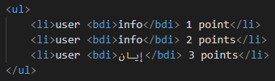

Bdi stands for bi-directional isolation
This element is used to isolate a part of text that might be formatted in a different direction from other text outside it.
This element becomes especially useful when embedding user generated content with an unknown text direction.
This is how its coded:
None
The global attributes are supported.
The event attributes are supported